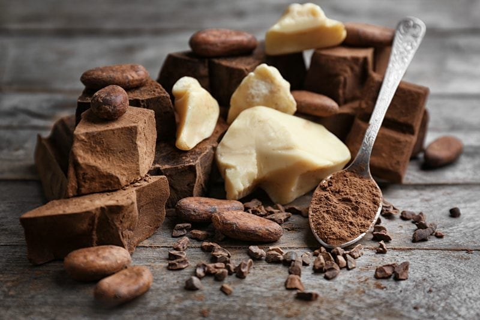
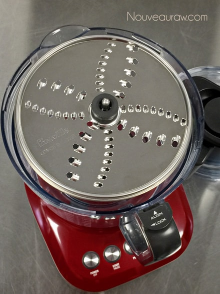
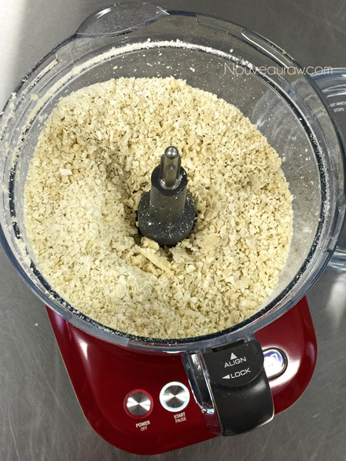
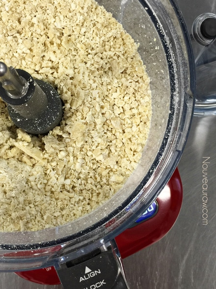

Grating and Melting Raw Cacao Butter
Grating and Melting Raw Cacao Butter
Raw cacao butter comes in several different forms. You can find it in one solid block form, in random-sized chunks, or preformed discs. But to use in recipes, it needs to be in liquid form. To speed up the melt time, we need to break it down into smaller pieces. In the past, I always used my raw cacao butter grater (ok, really a cheese grater but I bought it for cacao butter since I don’t eat cheese. hehe)

Static Electricity!
Herein lies the problem…. and it might not only be my problem… whenever I go to grate some static electricity causes the cacao butter shreds to jump outside of the bowl. Anytime I place my hands near it; the shreds jump further and further. Making it a real chore for me to prepare melted cacao butter.
I use to work in a pharmacy where I compounded creams and medication. And I had the same problem back then whenever I tried to pack the capsulation machine. The powders jumped all over. We tried everything to stop this phenomena, humidifiers, standing on wet rags… trust me, we got inventive in trying to “ground me.” nothing ever really worked. lol
My Ah-ha moment…
Today, I needed 1/2 cup of melted raw cacao butter. I groaned inwardly. I wasn’t looking forward to the “game.” I laid on the couch, waiting for the cacao gods to speak to me… wait for a second, the food processor! Duh! I have been working with raw ingredients for YEARS now, and why haven’t I ever thought of this idea? Oy-Vey. I may be the last one to the dinner table, but that doesn’t mean I’m not hungry.
I grabbed the food processor and fitted it with the coarse shredder blade. I loaded the chute with chunks of raw cacao butter and pressed the plunger down. Five seconds later, I had entirely shredded raw cacao butter, and IT STAYED IN THE BOWL! I proceeded to shred all of the cacao butter that I could find in my pantry. I then scooped it into a cambro, snapped on the lid, and placed it back into the pantry… all ready to go for my next inspirational moment. To learn more about raw cacao butter, click (here).
- 1/2 cup (50 g) grated cacao butter – yields 1/4 cup liquid
- 1 cup (100 g) grated raw cacao butter – yields 1/2 cup liquid
Double-boiler melting method:
- A double boiler consists of a flat-bottomed pan that fits into another pan of simmering water.
- The double boiler insert isn’t submerged in the water underneath; there is a gap between the water level and the bottom of the double boiler insert.
- The double boiler is heated by the steam from the liquid below, not the hot water, which makes the heat more gentle and indirect.
- Add roughly 1-2” of water to the base pan, again making sure that the inner pan doesn’t touch the water.
- Bring the water to a simmer and place the raw cacao butter inside of the inner bowl.
- Stir occasionally until the butter is thoroughly melted. Don’t let the pan get too hot.
- Never cover the top pan of the double boiler that contains the chocolate while it’s melting, it will create moisture inside of the bowl and ruin the chocolate. It could cause it to seize, which will make it unusable.
- Once 3/4 of the butter is melted, I usually turn the burner off and let the warm melted liquid continue to melt the other chunks.
- Once the bowl of chocolate comes off the heat, wipe the bottom of the bowl to remove any excess moisture, so it doesn’t end up in your chocolate.
- Now the butter is ready for use.
Dehydrator melting method:
- You will need a box-style dehydrator so that it has a cavity that can accommodate a bowl.
- Place the raw cacao butter in a shallow dish.
- The more surface of the cacao butter is exposed to the air, the quicker it will melt.
- Slide into the dehydrator and turn the temp to 145 degrees for roughly 15+ minutes. It depends on the volume that you are melting.
- Click here regarding the 145-degree temp.
- Stir occasionally until it is melted.
- Now the butter is ready for use.



© AmieSue.com